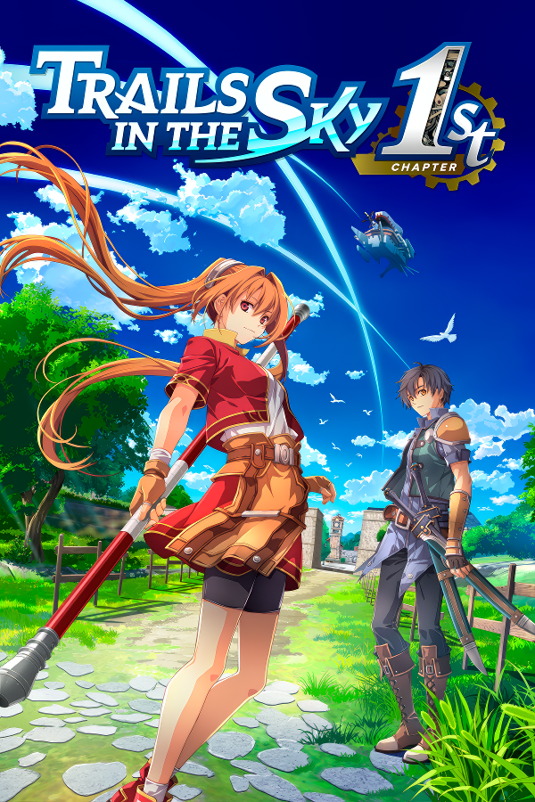

Trails in the Sky 1st Chapter
Every archived year-end list appearance, including placement and points earned.
About the Game
Flip through the pages of the iconic Trails series to where it all began with Trails in the Sky 1st Chapter! This stunning remake reimagines the beloved classic with new breathtaking visuals, refined gameplay, and the first unforgettable adventure across Liberl Kingdom.Join Estelle Bright and her adoptive brother, Joshua, as they embark on their journey as junior bracers, determined to climb the ranks of their renowned peacekeeping guild. What begins as a straightforward mission to prove their worth quickly evolves into a gripping adventure of intrigue and peril, as they unravel a conspiracy that threatens the very heart of their homeland.Key Features:Captivating World: Lose yourself in countless hours of adventure across Liberl as you progress through an elaborate storyline like no other. Every interaction is tailored to your unique progress in the game, from supporting characters all the way to NPCs!Modern Gameplay Mechanics: Experience seamless gameplay with the choice of traditional turn-based combat or all-new, real-time action combat, to suit your style of adventure.New Voiceovers in English and Japanese: Trails in the Sky characters come to life with brand new voiceovers in English and Japanese!Enhanced HD Visuals: Immerse yourself in the stunning world of Liberl, brought to life with vivid high-definition detail.Experience the story that redefined the JRPG genre and set the Trails series on its legendary path!
| Released | 2025-09-01 |
|---|---|
| Developer | Nihon Falcom |
| Publisher | GungHo Online Entertainment America |
| Genres | Action, Adventure, RPG |
| Platforms | PC, Nintendo Switch, PlayStation 5 |
SingleplayerSteam AchievementsFull controller supportSteam CloudRPGStory RichFemale ProtagonistAction RPGDarkAnime3DMagic
Where to Buy
Game information provided by RAWG.
Points by Year
List History
| Year | Source | List | Placement | Points |
|---|---|---|---|---|
| 2025 | GameSpot | The Best Games Of 2025 | Unranked | 1 |
| 2025 | Polygon | The 50 best games of 2025, as chosen by Polygon | 34 | 1 |